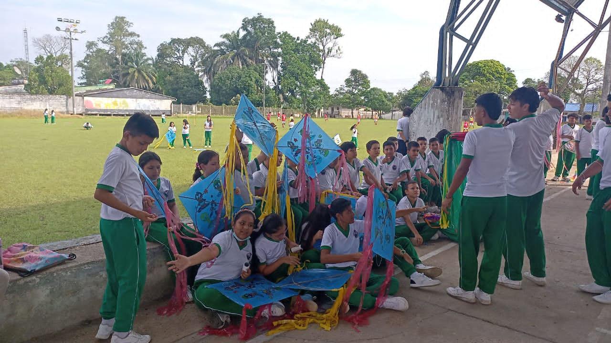

La Institución Educativa Agrotécnico Mixto, forma niños, jóvenes y adultos en los aspectos,
cognitivos, culturales, deportivos, religiosos, agropecuarios, tecnológicos, investigativos y de
emprendimiento, en un ambiente ecológico y pacífico consolidando en los estudiantes la práctica de los
derechos, deberes y valores para que sean competentes en el entorno histórico, social y cultural.

Visión
La Institución Educativa Agrotécnico Mixto, con especialidad agropecuaria, para el año 2026, con el
compromiso de su comunidad educativa será reconocida por el impacto de la formación en valores humanos,
cristianos, de convivencia pacífica, de un alto nivel académico, cultural, tecnológico, investigativo, de
emprendimiento que contribuya a la reconciliación, el perdón y el progreso de la comunidad belemita dentro
de un mundo moderno y globalizado.
Valores Corporativos
En la Institución Educativa Agrotécnico Mixto, valoramos la formación integral de nuestros estudiantes y su
capacidad para convertirse en ciudadanos íntegros y competentes intelectualmente, con habilidades para
trabajar en equipo, buenas relaciones interpersonales y humanas, y compromiso con la comunidad urbana y
rural. Asimismo, nos esforzamos por ofrecer una educación técnica agropecuaria innovadora, asequible y
comprometida en su quehacer pedagógico, académico, comunitario y empresarial, a través de convenios
interinstitucionales que permitan el apoyo y financiación de proyectos productivos. También nos esforzamos
por fomentar una conciencia ecológica y real en nuestros estudiantes, utilizando tecnologías que no dañen el
medio ambiente y generando propuestas y acciones en bien de la comunidad educativa.
Objetivos estratégicos
Formar al menos el 70% de estudiantes en los aspectos cognitivos, culturales, deportivos, religiosos,
agropecuarios, tecnológicos, investigativos y de emprendimiento, logrando que sean ciudadanos responsables y
respetuosos de los derechos de los demás, cuidadores del medio ambiente, críticos y reflexivos ante la
realidad, innovadores y emprendedores para contribuir al desarrollo de su entorno y de la sociedad en
general. Enfrentando así los desafíos del entorno histórico, social y cultural, mediante la formación en
habilidades sociales y la implementación de proyectos educativos innovadores.